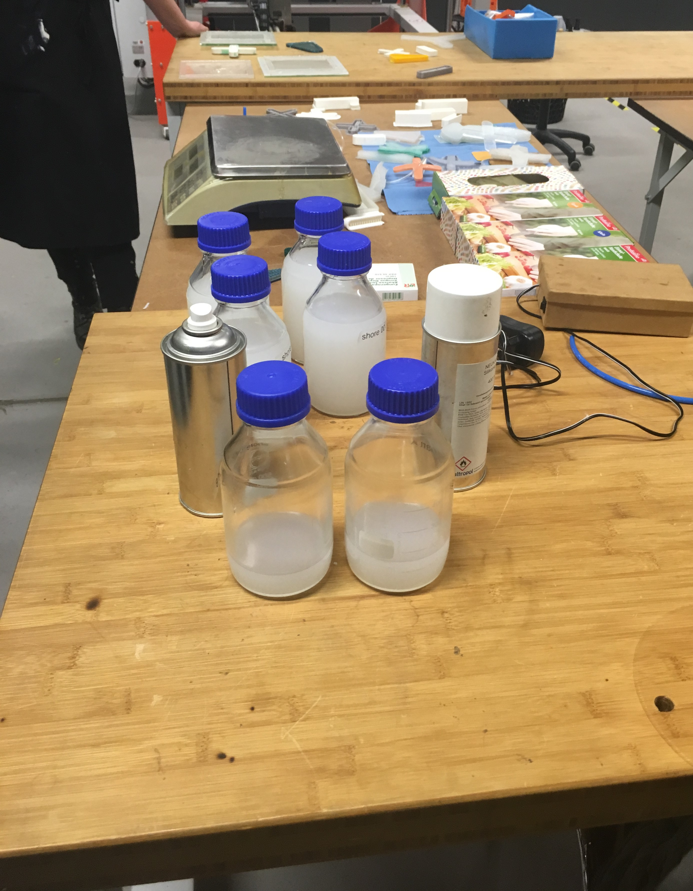
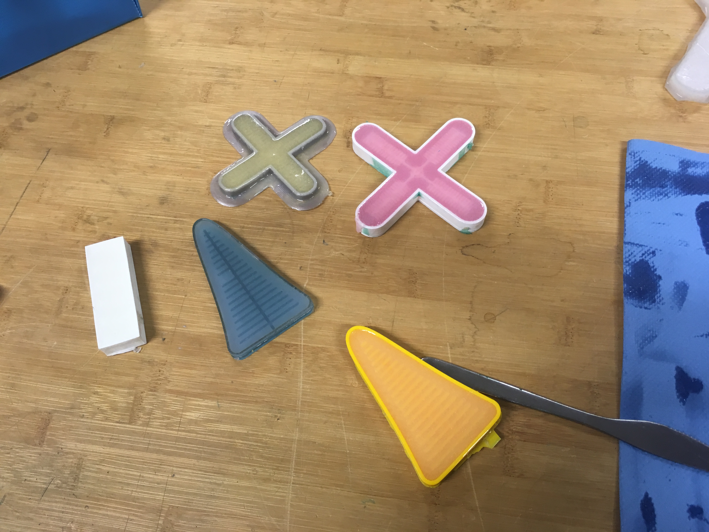

Soft robotics
Soft Robotics is an specific subfield of robotics.
Soft robots are made from soft, elastic materials, like those found in living organisms.
They are use in new areas where rigid robots are not viable; for example, for drug delivery, non-invasive surgical procedures, as assistive devices, prostheses or artificial organs.
The inspiration for the design of many soft robotic systems comes from nature.
At the lab for this task, we utilize two different approaches to have this soft robotics. 1. SILICON INFLATABLE ACTUATORS
The first step would be to create a 3D mold, with the shape we want our soft robot to have.
We also have to take into account how we want it to move, and for that we must think how the air should circulate and where for the movement to take place.
The next step is to create the necessary mix to create the soft robotic. We use the sillicon rubber Neukasil RTV 22 and RTV 145. Depending on the percentage we use of each of them, it will have more or less flexibility.
Also we add some colorants.
It is necessary to pour a silicone spray before pining the mixture in the mold, so that later it is easier to remove it.
We put the mold in the oven and wait about 15 minutes.
Finally for what functions it will be necessary to connect it to something that gives it air and thus can move.


The main idea is the same, to think in what form we should make the air channels to allows the desired movement.
We make our design in vinyl and baking paper. It is necessary to make the same design, but in mirror way, to be able to join the two parts correctly.
Sealing it with the iron. The parts where the baking paper is will not be sealed. It will be where the air will go.
In addition, we have to take into account the channel to insert the pumping tube.